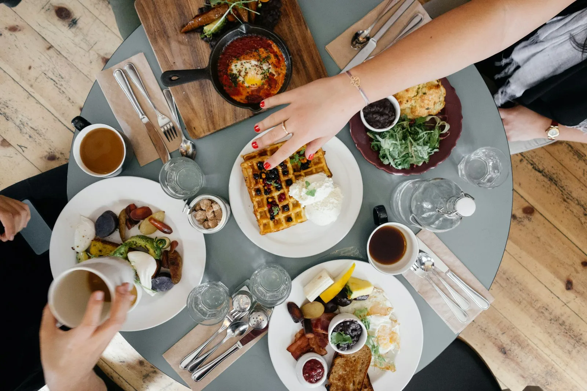
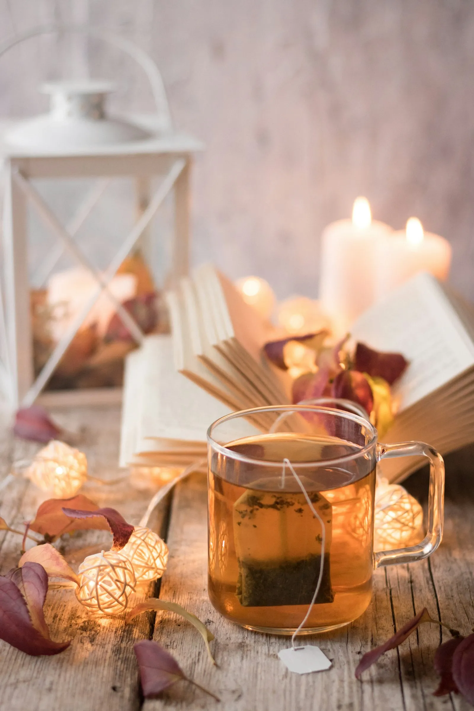
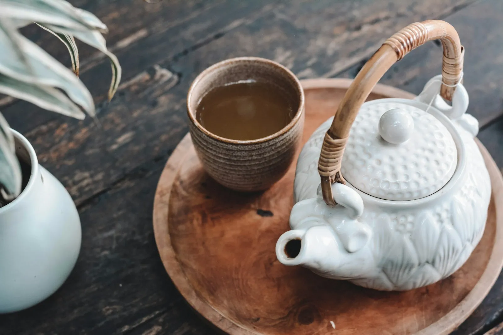
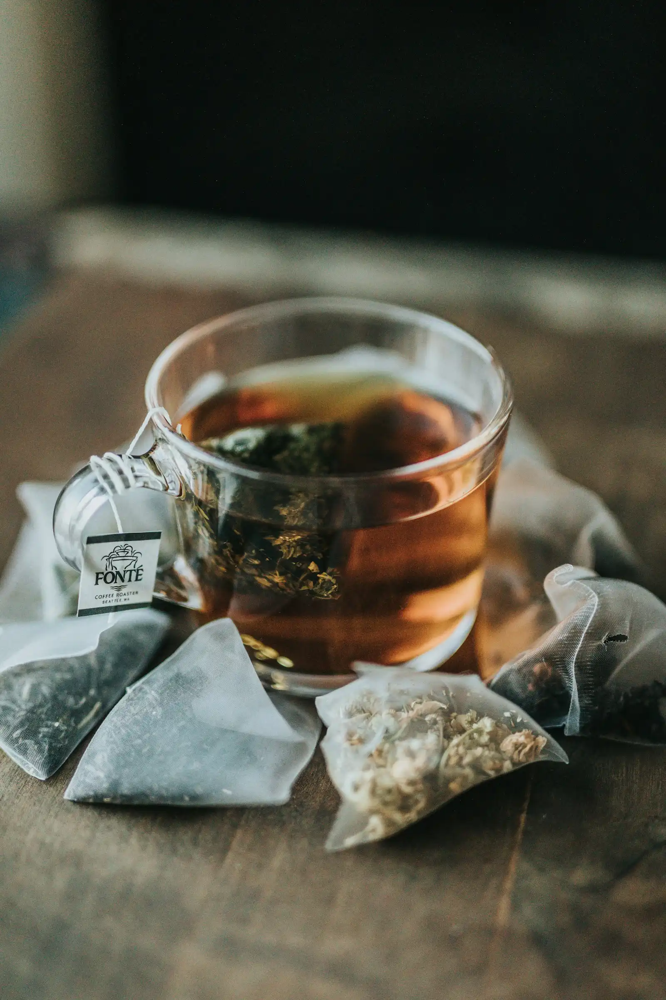
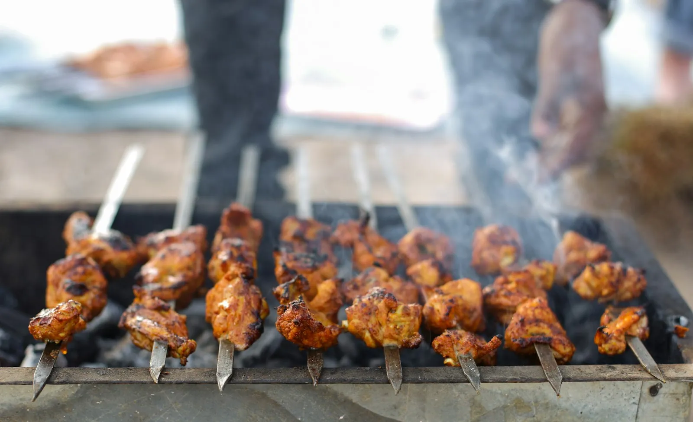
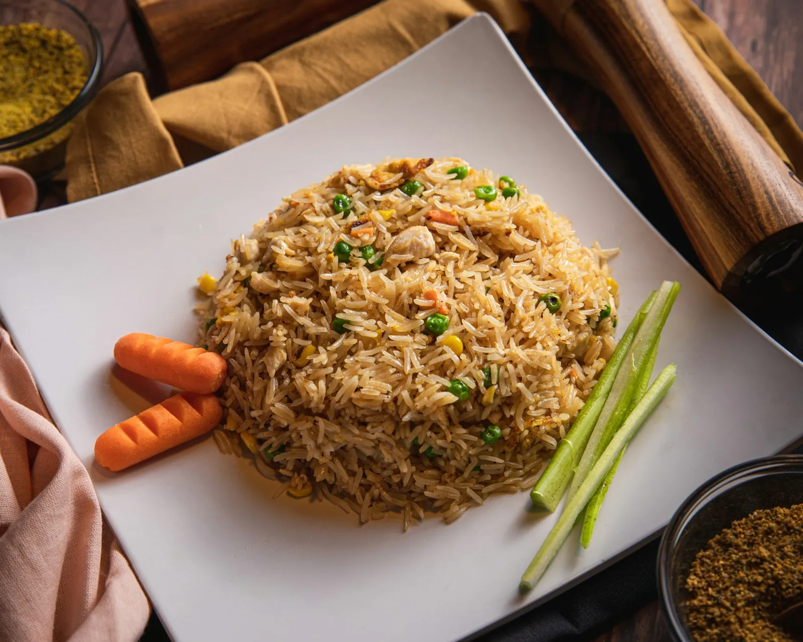
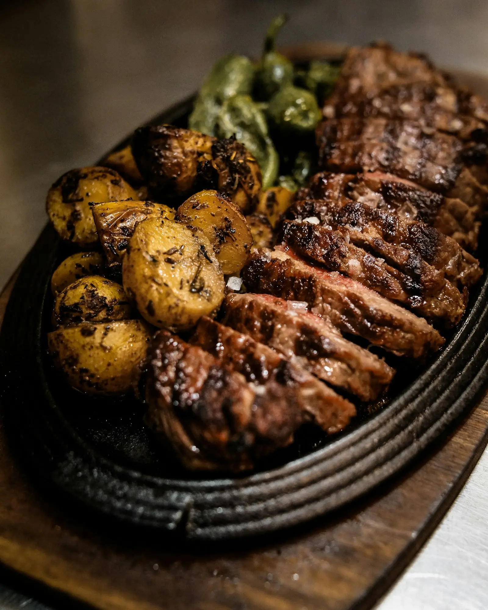
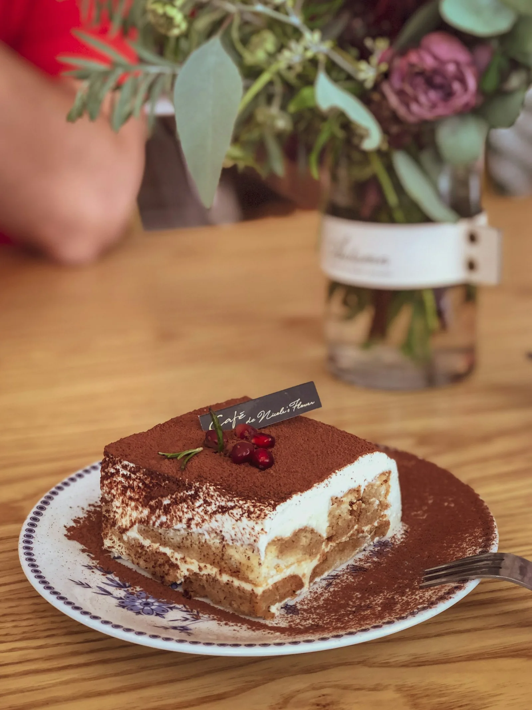
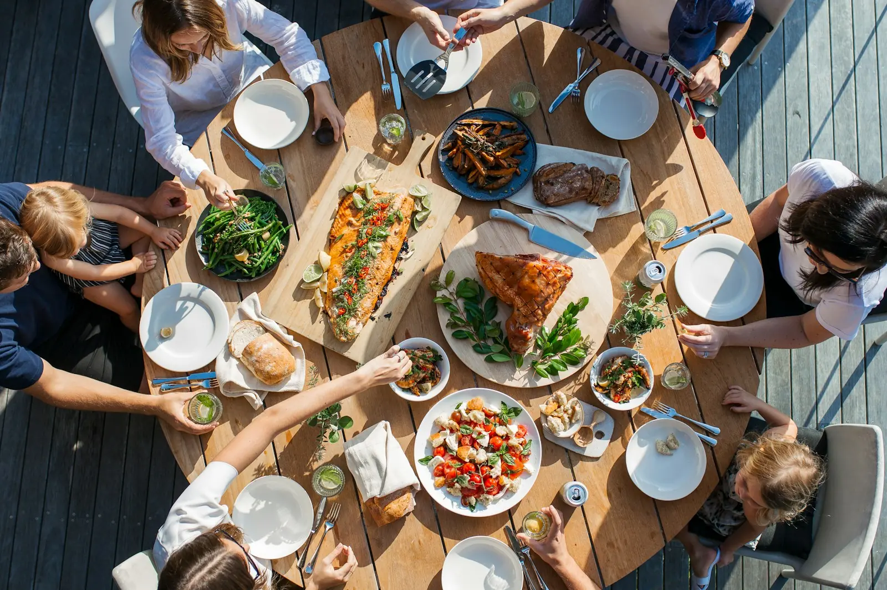
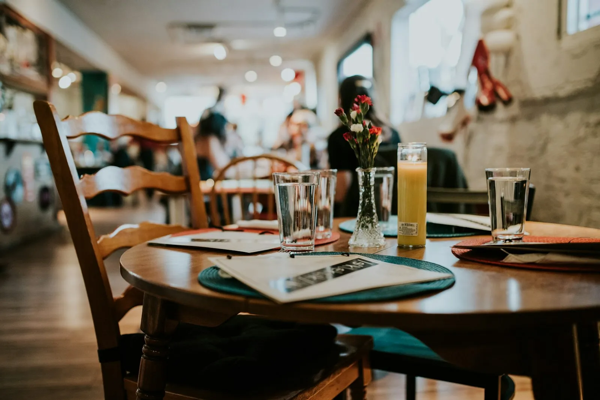

Hi-tea, every day
The only hi-tea-cum-lunch in the city that runs seven days a week — the single most repeated praise in reviews.

GT Road · Fazal Centre · Rahwali, Gujranwala Cantt
Hi-tea seven days a week, and six cuisines under one roof — barbecue, Chinese, Pakistani, Continental, Italian and Middle Eastern — served across three floors in the heart of Rahwali.
The house special
The biggest draw in Rahwali, and the one regulars mention first: a hi-tea that is really lunch and tea in one sitting. A wide buffet spread of Chinese and Pakistani dishes, soups, starters and desserts — served every day, not just on weekends.
Come hungry, come with the family, and take your time over it. That is how Gujranwala does hi-tea, and this is where the city comes for it.








Family first
Chahar Baagh is a family restaurant in the full sense: big tables, a menu wide enough that everyone at the table finds their dish, and room for children and grandparents alike. It sits in Fazal Centre on GT Road, with shopping close by and a play land in front of the restaurant that families pair with a meal out.
It is also a natural stop on the road — halfway between Lahore and the north, on the main GT Road through Rahwali — which is why so many travellers plan a lunch or dinner stop here.
The rooms
Guests describe all three floors as beautifully designed, with a royal, antique look that runs from the dining rooms to the café-style corners. The buffet sits at the top of its game, and the seating is comfortable enough for long family meals.
Come for the hi-tea, stay for the room — the ambience is the part reviewers remember as clearly as the food.

Why locals choose Chahar Baagh
The only hi-tea-cum-lunch in the city that runs seven days a week — the single most repeated praise in reviews.
Barbecue, handi, desi, Continental, pasta, Italian, Chinese and Turkish — one menu, every appetite covered.
Three floors of royal, antique-styled dining that guests call the best-looking restaurant in the area.
Big tables, generous portions and a setting built around family meals and celebrations.
At the west end of Fazal Centre, easy to reach, easy to park, and a natural stop on the road.
“One of the best restaurants in Gujranwala. Food taste and service is excellent. Ambience is outstanding. I think Chahaar Baagh is the only restaurant in Gujranwala where you can find hi tea cum lunch 7 days a week.”
— Guest review, Tripadvisor
From the kitchen
Photographs are illustrative food photography, not the restaurant's own dishes. Tap any image to view it larger.
Visit us
Good to know
Yes. Guests report hi-tea running seven days a week — it is a lunch-cum-tea buffet, not a weekend-only event.
Chinese, barbecue, Pakistani, Continental, Italian and Middle Eastern, with a Turkish touch — including lamb ouzi. One menu, six cuisines.
Every day, 12:00 PM to 12:00 AM — lunch through to late dinner, seven days a week.
Walk-ins are welcome, but for family gatherings and hi-tea it is best to call ahead on 0321 1352222 — the dining rooms fill up at peak times.
At the west end of Fazal Centre on GT Road, Rahwali, Gujranwala Cantt — Service Road, Green Town, postcode 52230. Parking is available at Fazal Centre.
Yes — it is a family restaurant with large tables across three floors, and a play land in front of the restaurant that families often visit alongside a meal.
Book a table
Tell us the day, the time and how many are coming, and call to confirm — the team will hold your table. For hi-tea and family gatherings, calling ahead is the surest way in.
0321 1352222Daily, 12 PM – 12 AM